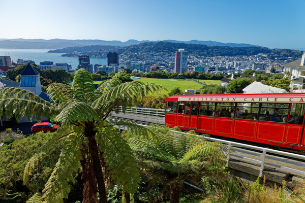

Wellingtons Cable Car!
Wellington Tourist Location
A Famous Wellington Landmark!
The Wellington Cable Car is one of Wellington's most recognisable
attractions and has been transporting visitors between the city
centre and Kelburn for over 100 years. The short journey travels
up the hillside and provides passengers with views across Wellington
and the surrounding harbour.
Visitors can ride the cable car from Lambton Quay and travel up to
Kelburn, where they can explore other nearby attractions such as the
Wellington Botanic Garden and the Space Place at Carter Observatory.
The journey is also a great opportunity to take photographs of the
city and harbour from above.
The Wellington Cable Car is suitable for visitors of all ages and is
a convenient way to experience some of Wellington's scenery without
needing to walk up the steep hillside. It can also be included as
part of a larger day exploring Wellington's central attractions.
Facts:
- Located in central Wellington
- Travels between Lambton Quay and Kelburn
- Operating for over 100 years
- Provides views of Wellington and the harbour
- Popular with tourists and locals
- Connects to nearby attractions and gardens
- Suitable for visitors of all ages
Costs:
- Adult return ticket: approximately $12
- Child return ticket: approximately $6
- One-way tickets are also available
- Estimated food costs nearby: $10-$30 per person
- Estimated total visit cost: $12-$50 per person